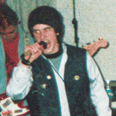
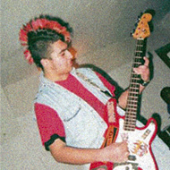
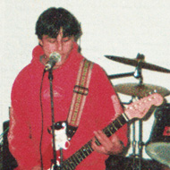

Quería tener una banda al igual que su hermano, y comenzó reclutando gente en base a sus looks.
Su idea de formar una banda de punk melódico se torció un poco cuando eligió a un cantante sin melodía ninguna, por lo que él mismo se encargo de componer y cantar algunas canciones.

Voz y guitarra
Convocado al grupo por su apariencia, fue quien le puso nombre a la banda y propuso al resto de los integrantes. Su interés no estaba en la música, la veía sólo como un apoyo para transmitir letras provocativas. Tras la salida de Marcos se encargó de la guitarra y compuso nuevas canciones.

Bajo
Fue invitado al grupo sólo por tener una cresta, al igual que Andy.
Comenzó tocando con el bajo desenchufado pero terminó aprendiendo. Abandonó sus estudios de secundaria y se dedicó al bajo, logrando ser premiado como mejor bajista en un concurso donde su profesor formaba parte del jurado.

Guitarra
Fue el primer guitarrista del Infanto y compuso la música de las primeras canciones.
Escribió algunas letras y por un tiempo suplantó a Andy en la voz.
Las diferencias con Oscar y sus gustos musicales distintos lo llevaron a abandonar el grupo.
Descargá la discografía completa de Infanto-Juvenil
Yo quería nacer en Europa u otro lado
y me toco ser sudamericano,
si mi alma eligió esto realmente tuvo mal gusto
y si no lo eligió lo eligió alguien injusto
y si yo me lo merezco diganme que hice mal,
por qué mierda tuve que nacer en Uruguay?
Yo quería ser del primer mundo
y sólo soy un uruguayo inmundo.
Yo quería tener la pinta de Richard Gere
y soy más feo que Shaquille O'Neal.
Yo quería los músculos de Muhammad Ali
y soy más flaco que un somalí.
Yo no quería nacer aquí,
yo no quería ser así.
Por qué tuve que nacer aquí?
Por qué tuve que ser así?
Yo quería la guita de Cacho de la Cruz
y no tengo ni para pagar la luz.
Yo quería viajar a todos lados,
y no he salido de Maldonado.
Si mi alma eligió esto realmente tuvo mal gusto
y si no lo eligió lo eligió alguien injusto
y si yo me lo merezco diganme que hice mal,
por qué mierda tuve que nacer en Uruguay?
Yo no quería nacer aquí,
yo no quería ser así.
Por qué tuve que nacer aquí?
Por qué tuve que ser así?
Vos me robarás
y yo te robaré,
vos me buscaras
pero me escaparé.
Me arrinconarás
para asfixiarme de a poco,
pero como harás
para matar a un loco?
Yo soy tu infanto juvenil,
Yo soy tu infanto juvenil,
Yo soy tu infanto juvenil.
Lo tuyo es mio
y lo mio es mio,
te doy una pista,
soy anarquista.
Como no te voté
no te obedeceré,
libre nací y libre moriré.
Yo soy tu infanto juvenil,
Yo soy tu infanto juvenil,
Yo soy tu infanto juvenil.
Muchas opciones en la mesa
menos la que me interesa,
maldita discriminación,
la libertad no es una opción.
Me iré al polo norte
en busca que otro horizonte,
al menos ahí no hay gobierno,
no es este caos, no es este infierno.
Yo soy tu infanto juvenil,
Yo soy tu infanto juvenil,
Yo soy tu infanto juvenil.
Yo estoy aquí,
esperándote a ti,
se que no vendrás,
no sos para mi
Ya son las dos
y yo te espero a vos,
adentro de mi cuarto
hay lugar para los dos.
Te llamo a cada rato
y no me atendes,¿por qué?
se que estas ahí
y no queres,lo se!
Vos estas allí,
sin pensar en mi,
no entenderás
por que te quiero a ti
La verdad no se
de que me enamore,
vos vendías tu cuerpo
y yo te lo compre
Te llamo a cada rato
y no me atendes,¿por qué?
se que estas ahí
y no queres,lo se!
Ya son las diez
y vos no apareces,
quizás estés enferma
porque es fin de mes
No me importa si me odian
o si me quieren de verdad,
no me importa el pasado,
no me importa nada más.
Si la gente habla mal,
no me importa lo que digan,
porque yo soy un vejiga,
un vejiga de verdad.
No,no me importa
No,no me importa
No,no me importa
No!
Esta lleno de envidiosos,
pordiosero y algo más,
también gente que te quiere,
que te quiere de verdad.
Pero a veces te ocultan,
toda su falsedad,
no me importa lo que digan,
lo que diga mi mamá.
No,no me importa
No,no me importa
No,no me importa
No!
Tenés plata, queres más,
ves la lata y no te aguantas,
por segundo lo dudas,
metes la mano y escapas.
Quién pudiera ser pirata
para robar ese tesoro,
Quien pudiera ser Peirano
para robar al Uruguay.
Llega el día, te descubren,
pero no te arrepentís,
te cogiste a 3 millones,
así que ahora te reís.
Quién pudiera ser pirata
para robar ese tesoro,
Quien pudiera ser Peirano
para robar al Uruguay.
Seguiré tu ejemplo, y el de tu hermano,
seré glorioso, seré Peirano.
Y quedaré en la historia para siempre,
para siempre...
No es sólo una emoción,
ni tampoco un sentimiento,
es un habito natural
que se lleva adentro.
te sientes diferente
a todos los demas,
te encierras en tu ambiente
y bajas la moral.
El punk te hace saltar,
no lo podrás dejar de escuchar,
el punk te hace pensar
que estas como un loco suelto.
Te sientes perseguido
por la sociedad,
te miran de reojo
y sigues igual.
Te vistes diferente
a todos los demás
y todos te juzgan
por tu indignidad.
El punk te hace saltar,
no lo podrás dejar de escuchar,
el punk te hace pensar
que estas como un loco suelto.
Estoy confundido
y un poco aturdido
de todo el chusmerio
pero tengo que enfrentar
todo lo que dicen de mi,
no dar bola a nadie más,
aunque tenga que matar,
aunque tenga que matar.
El punk te hace saltar,
no lo podrás dejar de escuchar,
el punk te hace pensar
que estas como un loco suelto.
Te va a matar!
Tengo miedo no me asusten por favor,
tengo una enfermedad que me puede matar,
vengan para acá,no me dejen sólo que me puedo asustar
y puedo terminar!
Cómo será la muerte?,cómo sera?
Cómo será el destino?,qué nos pasará?
Cómo será la muerte?,cómo sera?
Cómo será el destino?,qué nos pasará?
Pasará,pasará,pasará!
No se que que pasará,si mi alma se levanta,
yo me voy a asustar,me voy a cagar,
tu novia no me va a olvidar,y vos te vas a enterar,
aunque yo quiera estar,la muerte me llevará.
Cómo será la muerte?,cómo sera?
Cómo será el destino?,qué nos pasará?
Cómo será la muerte?,cómo sera?
Cómo será el destino?,qué nos pasará?
Pasará,pasará,pasará!
El pasado me persigue
y yo se lo que hice,
ahora quiero cambiar,
otra vida adoptar
Sin sentido me encontré,
yo atrás no quiero volver,
tu hermana está sola
y la disfruto a cada hora.
Volver para atrás
sería un final y nada más,
sólo es un sueño
lo que te podrá salvar.
Volver para atrás
sería un final y nada más,
sólo es un sueño
lo que te podrá salvar.
Lo de antes fue anterior,
ahora viene lo mejor,
se acabaron las pavadas,
ya no duermo con frazadas.
Sin sentido me encontré,
yo atrás no quiero volver,
tu hermana está sola,
y la disfruto a cada hora.
Volver para atrás
sería un final y nada más,
sólo es un sueño
lo que te podrá salvar.
No puedo parar de discutir,
no puedo soñar sólo en ti,
tengo que empezar a sonreír.
La vida es un placer
que se tiene que vivir,
el placer es disfrutar
el mal de los demás.
No tengo rencor dentro de mi
que no me deje vivir,
que no me deje vivir!
No quiero a nadie
y a nadie le importo,
como odio a ésta gente,
no respetan sentimientos,
no respetan nada al fin,
sólo te quiero a ti
si vos me queres a mi
si vos me queres a mi!
No puedo soñar sin despertar,
No puedo volar sin correr,
pero tengo que alcanzar
la gran meta final.
Se acabó el tiempo de pensar,
éste es el momento para actuar,
todo por un sueño que jamás cumplirás.
No es momento de parar,
no podes frenar,porque si lo haces
en éste infierno te perderás.
La luz jamás alcanzarás
y la oscuridad te tomará
y si intentas escapar
el diablo de destruirá,
la luz jamás alcanzarás.
Perdido tu estás.
aquí una vez más,
luchando por sobrevivir,
tan sólo un poco más
No te rendirás
o te morirás,
ya que en éste lugar
sólo vos estás
La luz jamás alcanzarás
y la oscuridad te tomará
y si intentas escapar
el diablo te destuirá,
la luz jamás alcanzarás.
No me gustan las palabras
que no dicen lo que siento,
vos sabes que no te hablo,
y por eso no te miento.
Lo difícil me aburre,
y lo fácil no es malo,
se muy bien lo que ocurre,
yo quiero un regalo.
Giannina quiere apretar,
yo la voy a ayudar
Giannina quiere apretar,
yo la voy a ayudar.
No quiero una novia
para regalarle una flor,
no pienso gastar plata,
no creo en el amor.
No estudio un discurso
para poder apretar,
si estoy con Giannina
no tengo que actuar
Giannina quiere apretar,
yo la voy a ayudar
Giannina quiere apretar,
yo la voy a ayudar.
Giannina,
Giannina,
Giannina.
Giannina quiere apretar,
yo la voy a ayudar
Giannina quiere apretar,
yo la voy a ayudar
Esta vida esta podrida
y vos lo sabes muy bien,
si no encontramos la salida,
romperemos la pared.
Estoy harto de tus ideas,
son iguales que las de aquel,
vos mentis y te las ingenias para convencerme,
pero yo no te creo.
No te creo, no te creo a vos.
Vos no sos mi futuro,
vos no me darás nada,
yo no elijo mi destino,
menos es tu decisión.
Estoy harto de tus ideas,
son iguales que las de aquel,
vos mentis y te las ingenias para convencerme,
pero yo no te creo.
No te creo, no te creo a vos.
No te creo, no te creo,
te miro, y no te veo.
No te creo, no te creo a vos.
Me cae muy mal
que me llamen Oriental.
En mi no retumba
la Patria o la Tumba.
Si tuviera que elegir,
seguro que un sorteo,
me iba a ayudar,
a decidir.
No sabremos cumplir.
No sabremos cumplir.
No sabremos cumplir.
Juan Bautista fue el producto de una violación,
de 10 años de miseria y mucha depresión.
Su madre era muy jóven para tenerlo,
pensó en abortarlo pero no pudo hacerlo.
Lo dio en adopción y lo adpotó un policía,
que a los 2 años ya lo prostituía.
Un día y sin saberlo estuvo con su abuela,
teniendo relaciones en el patio de la escuela.
Una vida anormal,
como puede tocarle a cualquiera,
cuando todo sale mal
y no como uno quisiera
que fuera,
que fuera,
ahh!
Sufría necrofilia y era un caso serio,
revivió a más de un muerto en el cementerio.
Un día quiso usar el elongador peneano,
y logró meterse su propio pene en su ano.
Tuvo sexo oral con un sadomasoquista,
que usando sus dientes castro a Juan Bautista,
y núnca más lo hizo en toda su vida,
y un día se murió, apestado de sida.
Una vida anormal,
como puede tocarle a cualquiera,
cuando todo sale mal
y no como uno quisiera
que fuera,
que fuera,
ahh!
Juan Bautista,
producto de una violación.
Juan Bautista,
producto de una violación.
Juan Bautista,
producto de una violación.
Juan Bautista,
producto de una violación.
Voto en blanco.
Todo es una mentira.
Voto en blanco.
Porque no hay una salida.
Voto en blanco.
No es momento de soñar,
la jodita debe terminar.
Voto en blanco.
No a las falsas promesas.
Voto en blanco.
No elegiré a quien me robe.
Voto en blanco.
Conozco el juego
y se que núnca lo ganaré.
Voto en blanco.
Voto en blanco.
Voto en blanco.
Voto en blanco.
Voto en blanco.
Voto en blanco yo.